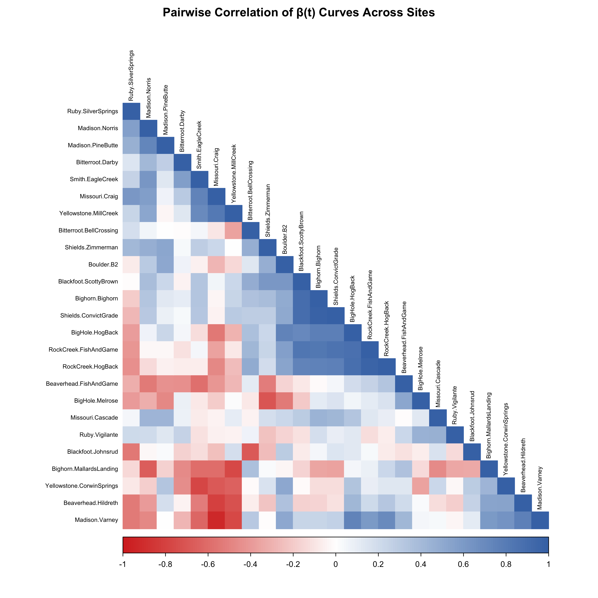
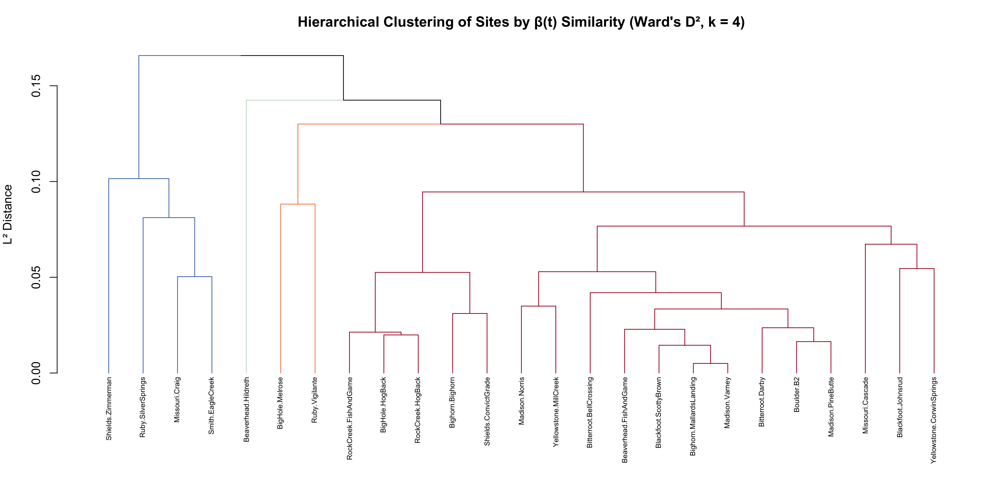
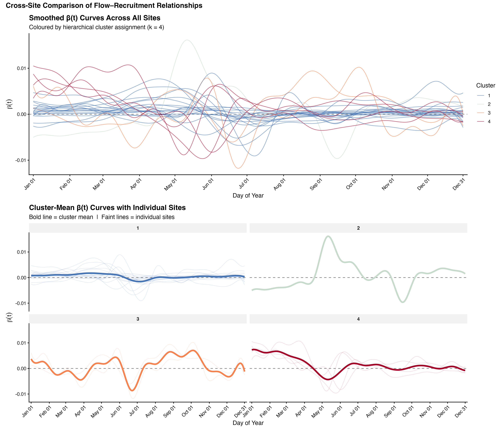
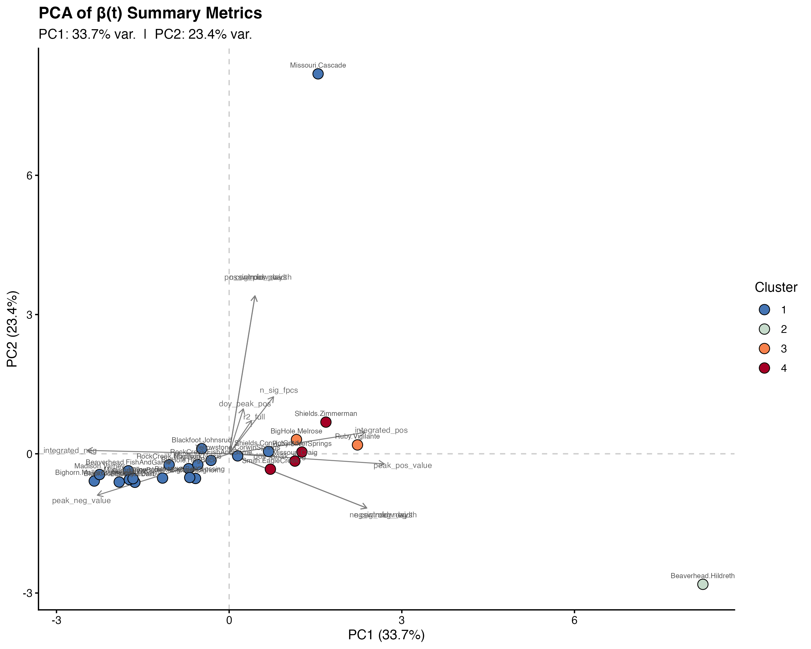
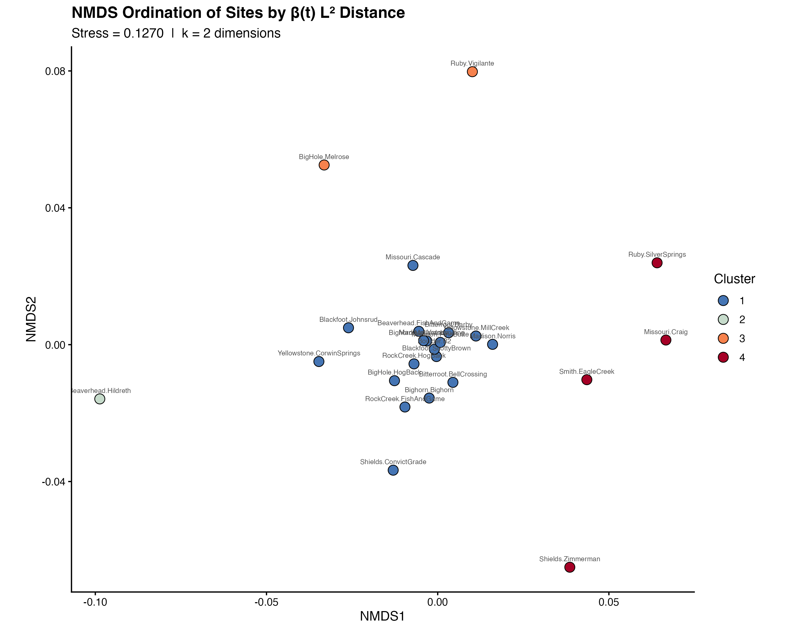
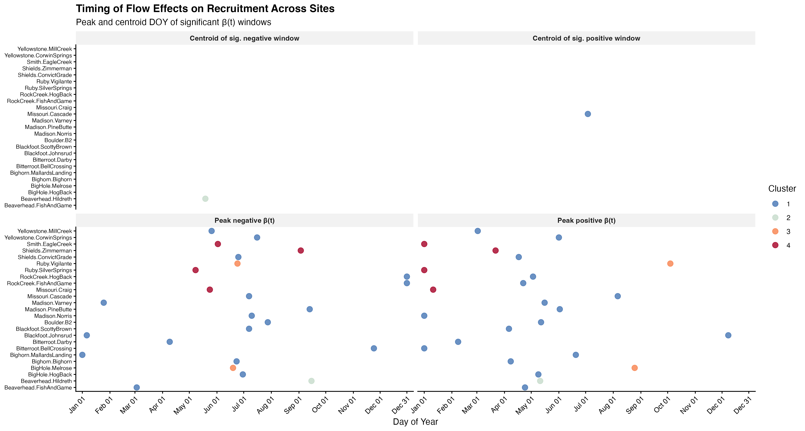
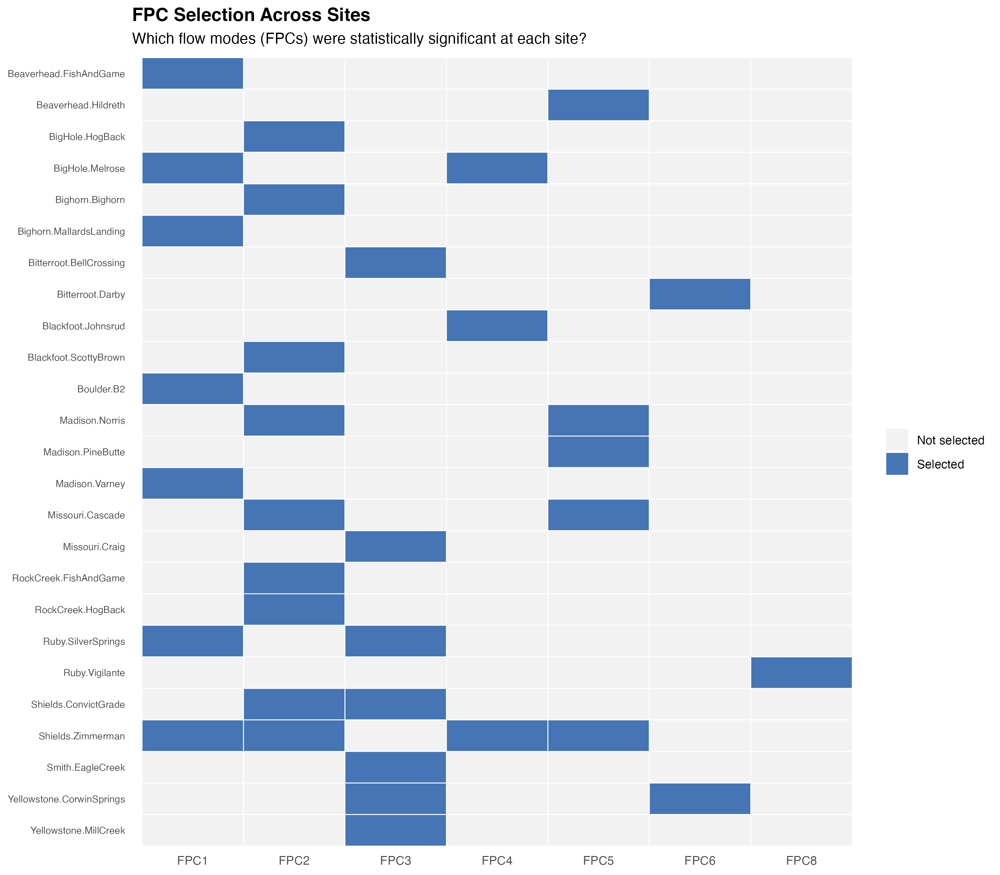

I. Pairwise correlation of β(t) curves
All sites correlated with one another and re-ordered by hierarchical clustering.

Cross-site synthesis of β(t) curves and weighted hydrographs
These figures compare flow–recruitment relationships across all sites
analysed. β(t) curves are clustered by L² functional distance, and summary
metrics are projected with PCA and NMDS. Site-level covariates can be
overlaid on the NMDS via envfit
when a covariate file is provided.
All sites correlated with one another and re-ordered by hierarchical clustering.

Ward's D² clustering on L² functional distance; coloured by silhouette-optimal k.

All sites overlaid (top) and cluster-mean curves with individual sites in the background (bottom).

Sites projected onto the first two PCs of extracted β(t) summary metrics.

Non-metric multidimensional scaling on the full L² distance matrix.

Peak DOY and centroids of significant β(t) windows for every site, sorted by cluster.

Which FPCs were retained at each site — reveals whether the same flow modes matter everywhere.
